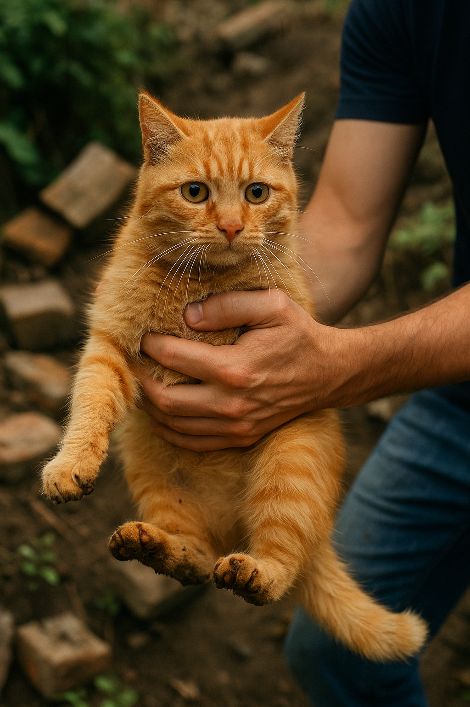

Bem-vindo à ONG FELINONG. Quem somos?
Nós somos uma organização sem fins lucrativos dedicada ao bem-estar dos felinos.
Nossa missão
Nossa missão é resgatar, cuidar e encontrar lares amorosos para gatos abandonados e em situação de risco, incluindo aqueles com deficiência física.
Como você pode ajudar
- Adote um gato
- Faça uma doação
- Seja um voluntário
Entre em contato conosco
Se você tiver alguma dúvida ou quiser mais informações, entre em contato pelo e-mail: contato@felinong.org ou pelo telefone: (12) 99219-1874
Rua dos Gatos, 123 - Centro - São Paulo - SP